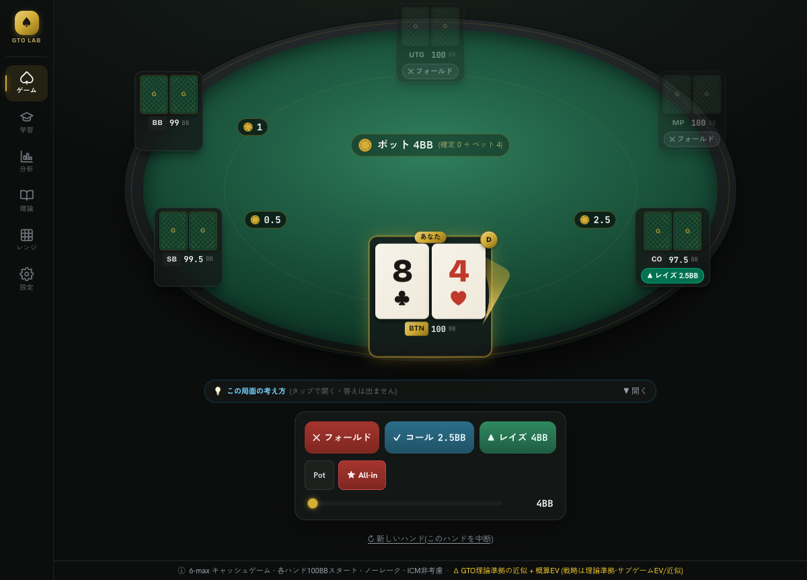
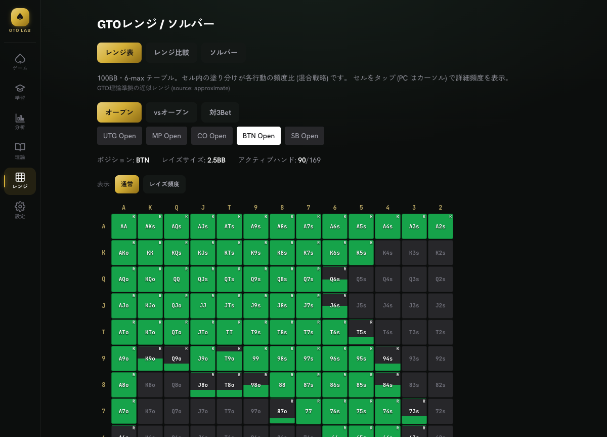
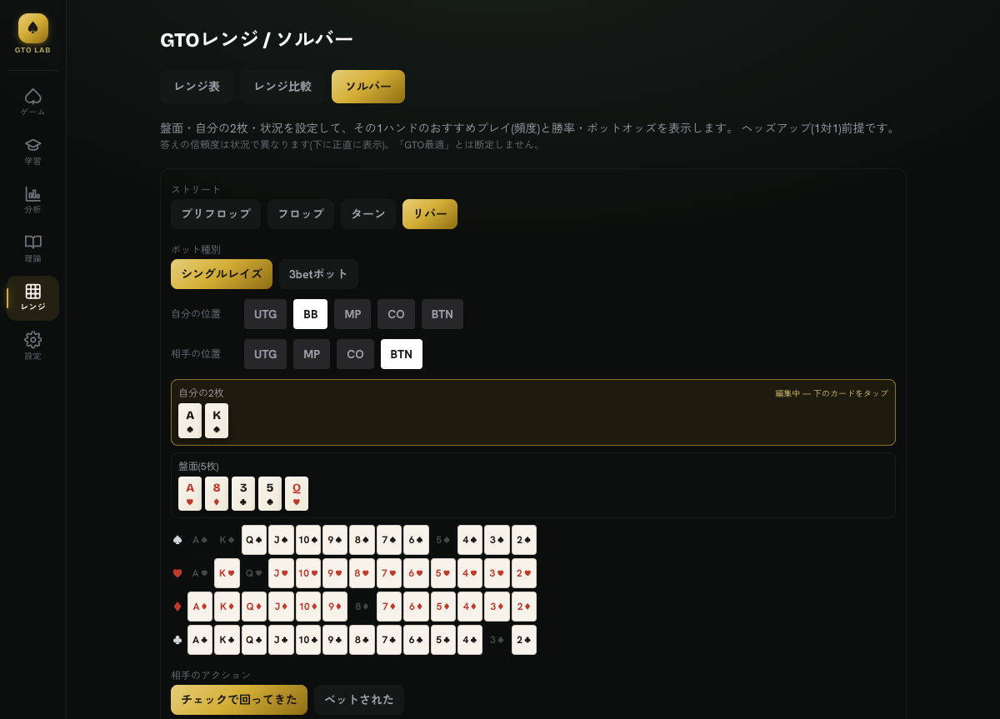
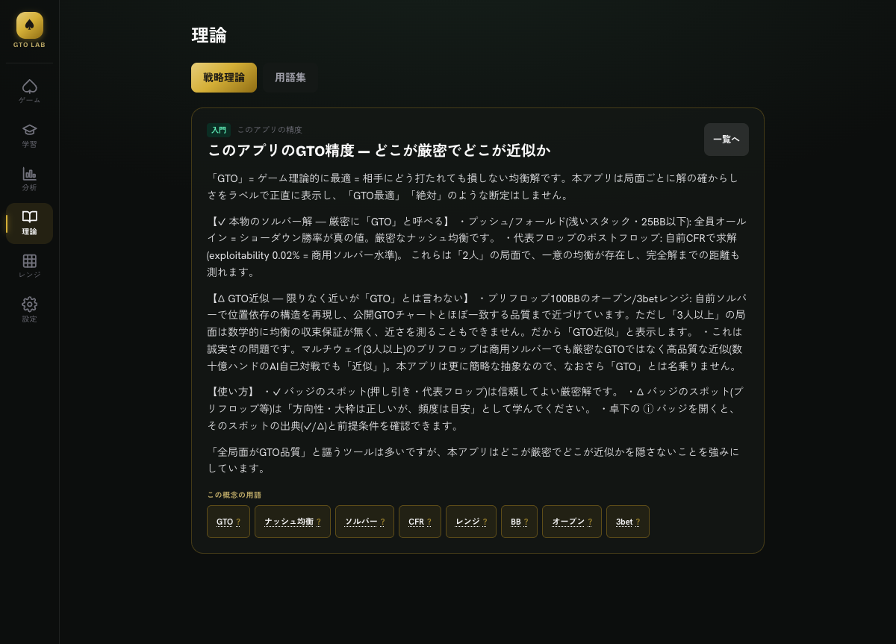

ローカルで動く、精度に正直な
ポーカーGTO学習アプリ。
ライブ卓でプレイしながら、最適戦略との差を学ぶ。レンジ・ソルバー・弱点分析・理論を1つに。 インストール不要・ブラウザで完結・無料。
※ 教育・学習用のシミュレーションです。実際の金銭の賭け・換金はありません。

「正直さ」を強みにした学習ツール
“全局面 GTO” を雑に謳いません。どこが厳密でどこが近似かを、はっきり示します。
精度を偽らない
局面ごとに「✓ 厳密ソルバー解」と「△ GTO近似」をバッジで区別。断定（GTO最適）は使いません。学ぶ側が信頼度を判断できます。
完全ローカル・無料
計算もデータ保存もすべて端末内。学習履歴は外部に送りません。アカウント不要・課金なし・オフラインでも動きます。
学びの導線が一体
実戦コーチ（EV損失）・弱点分析・ドリル・理論ライブラリ・用語集。「なぜそのプレイか」を局面から辿れます。
学習に必要なものを、ひとつに
全ポジションのGTOレンジを一目で
13×13グリッドで各ポジションのオープン／ディフェンス／対3betレンジを、混合戦略の頻度比まで色分け表示。
- セルをタップで各行動の詳細頻度
- レンジ比較・エクイティ分布の可視化
- 色だけに頼らない表示（R/C/M ラベル併記）

その1ハンドを「解析する」
盤面・自分の2枚・状況をカードピッカーで設定し、おすすめプレイ（頻度）・勝率・ポットオッズを表示。リバーは自前CFRで求解します。
- 52枚グリッドのタップ選択（手打ち不要）
- 解の出典（厳密／近似）を正直に明示
- 勝率・必要勝率・ポットオッズも併記

「なぜ」を学べる理論ライブラリ
ポジション・レンジ・ポットオッズ・ボードテクスチャ…入門〜プロまでの概念を解説。プレイ後はコーチがEV損失で振り返り。
- 用語集と相互リンク（その場で定義）
- 弱点分析 TOP3 → 関連理論・ドリルへ導線
- 押し引き・オッズ・ポストフロップのドリル

「GTO」とどこまで言えるか、正直に。
同じアプリでも、局面によって解の確からしさは違います。本アプリはそれを隠さず表示します。
押し引き（短スタック）／ 代表フロップ
2人の局面は一意の均衡が存在し、自前CFRで厳密に求解。完全解までの距離（exploitability）も測れます。
- プッシュ／フォールド（≤25BB）＝厳密 Nash
- 代表フロップのポストフロップ＝exploitability 0.02%（商用ソルバー水準）
プリフロップ100BB のレンジ
位置依存の構造を自前ソルバーで再現し、公開GTOチャートと一致する品質まで近づけています。ただし3人以上の局面は数学的に均衡の収束保証がなく、近さを測れません。
- 多人数プリフロップは 商用ソルバーでも 厳密GTOではなく高品質な近似
- だから「GTO最適」とは断定せず「GTO近似」と表示
3ステップで始められる
ブラウザで開く
インストール不要。スマホは「ホーム画面に追加」でアプリ化も可能。
プレイ／局面を設定
ライブ卓で打つか、レンジ・ソルバーで知りたい局面を選ぶ。
戦略とEVで学ぶ
GTO戦略・EV損失・勝率を、信頼度バッジ付きで確認。
よくある質問
本当に無料ですか？
はい。完全無料・広告なし・アカウント不要です。課金や有料プランはありません。
インストールは必要ですか？
不要です。ブラウザで開くだけで動きます。スマホ（Safari/Chrome）は「ホーム画面に追加」でアプリのように使え、オフラインでも動作します。
学習データはどこに保存されますか？
すべて端末内（ブラウザ）に保存され、外部サーバーには送りません。第三者送信ゼロの設計です（別端末への引き継ぎはJSON書き出し／読み込みで対応）。
「GTO Wizard」「PokerSnowie」とは関係ありますか？
無関係・非提携です（各社の商標）。本アプリのレンジ・解はすべて自社で生成／作成したオリジナルです。
精度はどのくらいですか？
局面で異なります。押し引きと代表フロップは厳密なソルバー解、プリフロップ100BBはGTO理論準拠の近似です。アプリ内で局面ごとに「✓厳密／△近似」を正直に表示します。
どんな端末で動きますか？
PC（Chrome/Edge/Safari）・スマホ（iPhone/Android）のモダンブラウザで動きます。UIは日本語です。